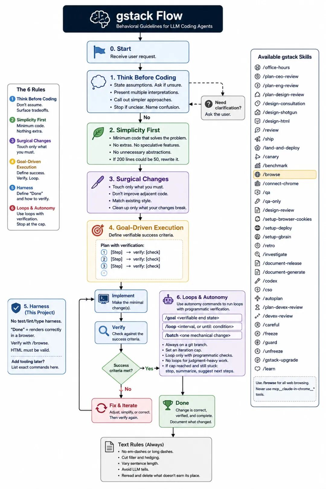
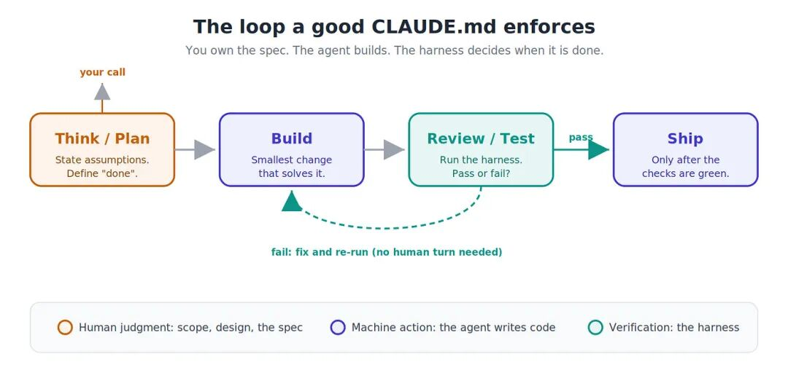
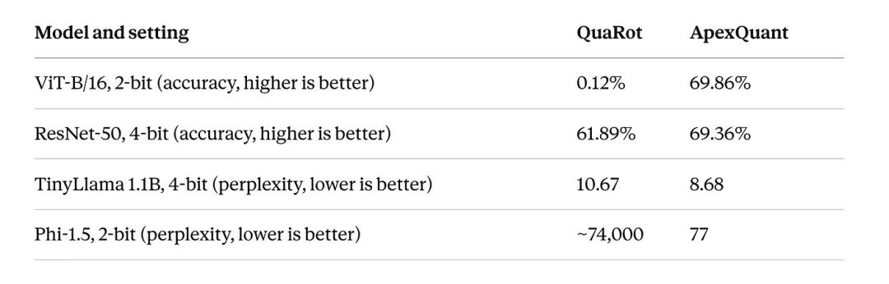

代码智能体在你喝杯咖啡的工夫就能写上千行代码。问题是，其中相当一部分错得理直气壮、行云流水。代码能编译，读起来像老手写的。可它三步之前就悄悄做了错误假设，现在轮到你去查到底哪儿出了问题。
有人说解药不过是一个 markdown 规则文件，听着就让人想翻白眼。一个文本文件让模型守规矩，就像给龙卷风贴张"请保持整洁"的便签。
后来真去研究了几份，照着搭了一个。结果帮人做出了一套量化（quantization）方法，在真正要紧的低比特精度上跑赢了发表过的 QuaRot 算法。一个周末搭完，不是一个月，而且 bug 少得出奇。那张便签条，还真干了实事。
以下就是这个文件里有什么，以及每一部分为什么有资格待在里面。
文件就是上下文，上下文就是全部
代码智能体跨会话没有记忆。打开一个新对话，它对你的项目、你的规范、你昨天修的 bug 一无所知。Karpathy 有个干净利落的比喻：把模型当成 CPU，上下文窗口当成内存。模型只能基于此刻加载到工作记忆里的东西行动。没进窗口的，等于不存在。
这重新定义了任务。关键不在于写一句聪明的一行提示词，而在于模型动手之前把正确的上下文喂进去。Karpathy 等人开始管这叫"上下文工程（context engineering）"，改名是有道理的。提示词是一条指令；上下文是模型把这条指令执行好所需的一切。
CLAUDE.md 是上下文工程最无聊、也最耐久的形式。它就是一个 markdown 文件，智能体每次开会话时自动读取。同样的规则，每次都一样，不管谁在开车、不管累不累——它是项目的铁律。「不以规矩，不能成方圆」，规矩写下来，执行才有保障。

CLAUDE.md 完整流程图
四条规则，终结瞎猜
文件开头有四条行为规则。它们对应 Karpathy 总结的代码智能体翻车模式，每条修复一个亲眼见过的故障。
先想再写。 把假设说出口。需求有两种理解时别闷头挑一个，而是点明。有更简单的方案就顶回去。这修掉的是最贵的故障：智能体拿到模糊需求，挑一个解释就写 200 行错得理直气壮的代码，等你反应过来已经晚了。
简单优先。 写解决问题所需的最少代码。不做投机性功能，不给只用一次的代码搞抽象，不处理不可能发生的情况。文件里的标准很直白：资深工程师会说搞复杂了，就砍。这一条专门治你让写个脚本、结果收到一套带插件系统的类层次结构的毛病。
手术式修改。 只动任务要求碰的东西。不"顺手优化"隔壁代码，不重新格式化本来能跑的东西，跟现有风格保持一致，哪怕你会换种写法。这能拦住那种顺手一改把三行修复变成六百行 diff、谁都审不了的勾当。
目标驱动执行。 把每个任务变成可以验证的东西。"加校验"变成"给非法输入写测试，然后让它们过"。"修 bug"变成"先写一个能复现 bug 的测试，然后让它过"。模糊的目标逼着智能体一遍遍问你"做完"到底是什么意思。锋利的目标让它自己查自己的活。
这几条没有一条是花活，这正是关键。它们都是一个细心的工程师不用想就会做的事，写下来，只是让模型也跟着做。
真正干活的部分：测试框架
从怀疑到信服的转折就在这里。四条规则是礼貌；测试框架才是引擎。
测试框架（harness）是模型自身以外的一切：测试命令、lint 检查、类型检查器，那个说"过还是不过"的东西。目标驱动那条规则的全部意义，就是把智能体挂到测试框架上，让它自己判断上一次改动到底行不行。
想象两种方式指挥装修工。"把房间弄舒服"是凭感觉：工头猜，你回来一看太冷，再来一遍，无穷循环。"把房间保持 21 度"是测试框架。现在一个温控器就能把循环跑起来，不需要你盯着。「工欲善其事，必先利其器」——框架就是那把利器，有了它，模型才不需要你在旁边当裁判。
文件在这点上非常严格：定义一个可验证的终点，然后循环（构建→跑检查→修→再跑）直到检查通过。它禁止在没有程序化检查的工作上搞循环：判断题、设计决策、长时间训练任务。这些要么人来定，要么脚本跑，绝不能开放式循环。它要求开 git 分支、设迭代上限，让循环永远无法失控打转。如果智能体卡住了，必须停下来报告哪里堵了，而不是在那瞎扑腾。
整个诀窍就在这个循环里：模型没那么聪明，不能闭着眼信。但它又够聪明，在一个能接住它错误的围栏里，可以放手让它干。

好的 CLAUDE.md 强制的工作循环
文件来自哪里：gstack
模板基于 gstack。Garry Tan，Y Combinator 的 CEO，今年早些时候把它开源了。几周内 GitHub 星标突破十万，这告诉你有多少人一直在跟同一个问题较劲。
gstack 的设计哲学是"薄框架，厚技能"。框架本身很轻；智能住在那些带有强烈主张的 markdown 里。它把智能体拆成用斜杠命令调用的角色，工作流过一套创业式冲刺（想→规划→构建→审查→测试→发布→复盘）。/office-hours 在一行代码都不存在的时候审问你的想法。/review 专门揪出多余复杂度和顺手乱改。/ship 没测试就不让代码过关。
CLAUDE.md 是结缔组织：技能是专科医生，文件是每个专科医生都得守的院规。
批评也得说句公道话，因为它确实存在。怀疑者管 gstack 叫"一个文本文件里放了一堆提示词"，在机械层面上他们没说错。这里没有新基础设施；每个技能就是 markdown 加一个系统提示词。但"不过一个文本文件"严重低估了一个好的文本文件对模型行为的影响，而这正是写这篇文章的全部理由。
实战验证：怎么用它跑赢 QuaRot
真正让人服气的部分：拿这套配置搭出了 ApexQuant，一种不需要重新训练就能把神经网络权重压到超低精度的方法。
简单交代背景：大模型每个数字用 16 或 32 比特存。量化就是压到 4 比特甚至 2 比特，模型更小、跑起来更省。问题在于，有几个大得离谱的数字——异常值（outliers）——会把压缩搞砸。要塞下它们，刻度得拉到那么宽，所有正常数字全被挤成一坨烂泥。
QuaRot，作为对照的已发表方法，有个漂亮的解法。它把每一组数字做一次随机旋转。旋转把异常值摊到很多个数字上，而模型的输出完全不变——这个性质叫计算不变性。异常值摊薄之后，一把均匀分布的刻度就能干净地把所有数量化。这是一个扎实、硬挣来的结果，也是要超越的标杆。
ApexQuant 多加了一个观察，灵感来自 TurboQuant：异常值会聚成一种可预测的、大致钟形的分布，而这个形状只取决于一行里有多少个数字。这个分布在统计学上有个名字（Beta 分布）。所以，与其用 QuaRot 那把均匀刻度，不如把量化等级精确放在数字实际堆积的位置。匹配数据的刻度，打赢均匀刻度。
诚实的代价是：这个技巧依赖行够长。一层有几百个数字一行时，匹配刻度赢得漂亮。一层只有九个（移动端模型里那些极小的深度卷积核）时，假设崩掉，ApexQuant 只能打平甚至输。所以这套方法出厂自带审计：先检查每一层，告诉你 GOOD、MARGINAL 还是 BAD，再决定跑不跑。以下就是真正要紧处的差距，无需训练、无需标定数据：

ApexQuant 与 QuaRot 结果对比
Phi-1.5 那一行是让人坐直的。2 比特下，QuaRot 产出的模型输出的是噪声；ApexQuant 产出的模型能用。在大层上，赢的幅度不是一点点。
该交代的底：6 比特和 8 比特时两种方法打平，因为已经没有可赢的空间了。而在移动端那种小卷积核的模型上，QuaRot 仍然是更好的选择。"跑赢 QuaRot"的意思是"在数学成立的大层架构上、在激进的低比特区间跑赢它"，不是"在哪儿都赢"。审计存在的意义就是让你永远别在它输的地方部署。
回到文件上：为什么一个从零开始的量化方法，带着自定义旋转代码和统计学匹配的码本，能在一个周末凑齐，还几乎没有 bug？
几个诚实的观察
我是被折服了，不是被洗脑了，所以以下几条是这个文件做不到的：
它不是魔法，它自己也说了。第一行就警告：这些准则用谨慎换速度，琐碎任务上你自己判断就好。你让它改个变量名，这些排场纯属多余。
它不会替你想出点子：CLAUDE.md 让构建过程干净了，但关于分布的洞察不是它想出来的，实验不是它跑的，哪个结果重要也不是它定的。人来掌管规范、设计和判断一个数字到底靠不靠谱。文件是逼着你不偷懒的机制，不是替你思考的替代品。
测试框架那节是承重墙，默认是空的。模板出厂时测试、lint 和类型命令都留空，因为只有你知道自己的技术栈。复制文件但跳过那部分，你就留住了礼貌扔掉了引擎。循环没有可检查的东西，你又回到凭感觉。
而且循环用错地方很危险。文件很坚决：永远不要在判断密集型工作或长时间计算任务上搞循环。量化扫描或训练一次不是测试-修复循环。把开放式循环指向那些东西，烧的是时间和钱，什么也得不到。
到底该怎么用
你跟智能体写代码，却没给它一个 CLAUDE.md，你是在把最容易捡的便宜丢在桌上。不是因为这文件多聪明，而是因为它把你早就知道该有的纪律写下来了，每个会话都用，用在一个不然会偷工减料的东西身上。
复制 gstack 模板，填入你技术栈的测试框架命令（这是唯一只有你能写的部分），保留那四条规则。然后看智能体停止瞎猜、停止铺摊子、开始检查自己的活。龙卷风上的便签条，原来是一道围栏。而一道围栏，恰好是一台跑得飞快、出口成章、偶尔犯错的机器最需要的东西。「看似寻常最奇崛，成如容易却艰辛」——道理看着眼熟，真正做到的没几个。